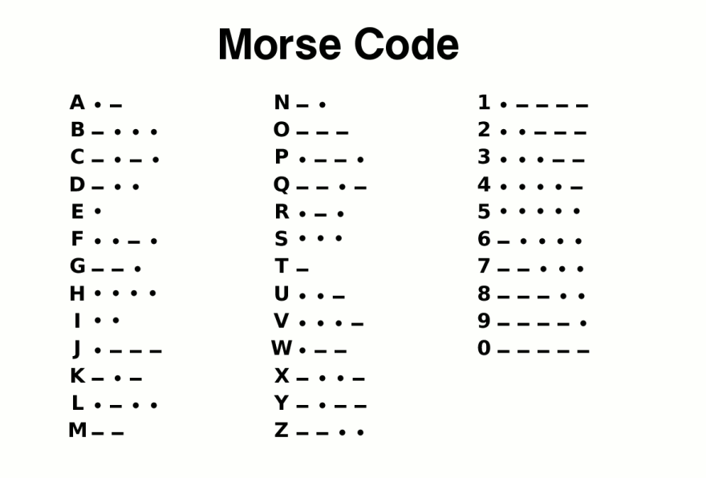
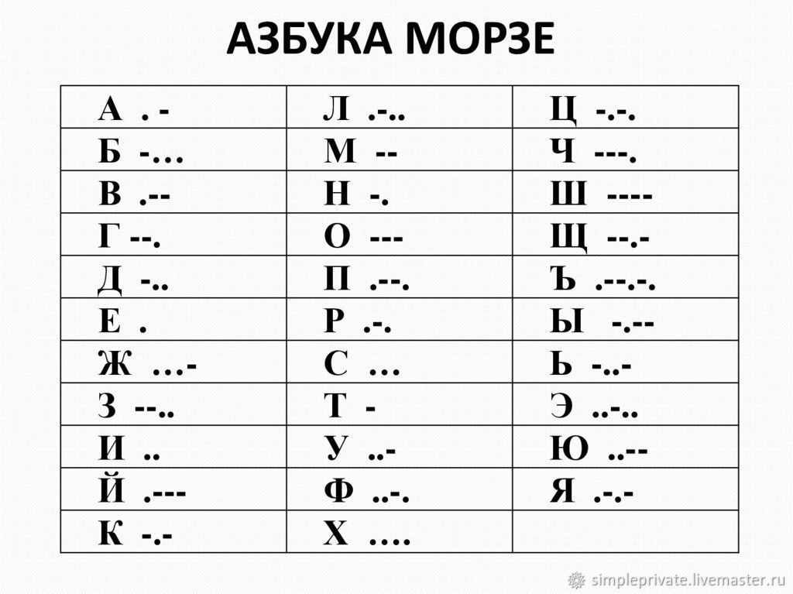

Азбука Морзе
Азбука Морзе - способ знакового кодирования, представление букв
алфавита, цифр, знаков
препинания и других символов последовательностью
сигналов: длинных (тире) и коротких (точек). За единицу времени принимается длительность
одной точки. Длительность
тире равна трём точкам. Пауза между элементами одного знака — одна точка, между знаками в
слове — 3 точки, между словами
— 7 точек. Назван в честь американского изобретателя и художника Сэмюэля Морзе.

Азбука Морзе
В 1832 году Морзе наблюдал за опытами
изобретателя-электротехника Павла Шиллинга по созданию первого электромагнитного
телеграфа, что сыграло немаловажную роль в истории создания Азбуки Морзе. Находясь
под впечатлением от увиденного, Сэмюэл Морзе увлекся идеей возможности передачи
информации по проводам посредством комбинации так называемых «искр». Возвращаясь
домой на корабле, Сэмюэл сделал пару эскизных чертежей будущего устройства. На
протяжении трех последующих лет Морзе безуспешно пытался создать нормально
работающий аппарат передачи информации по проводам. Лишь к 1837 году, уже будучи
профессором живописи Нью-Йоркского университета, ему удалось создать аппарат,
который смог послать сигнал по проводам на расстояние чуть менее 520 метров.

Азбука Морзе
Русский вариант азбуки был принят в 1856 году. Для передачи
русских букв использовались коды сходных латинских
букв; это соответствие алфавитов позже перешло в МТК-2, а потом в КОИ-7 и КОИ-8
(однако в азбуке Морзе букве Q
соответствует Щ, а в МТК и КОИ — Я).